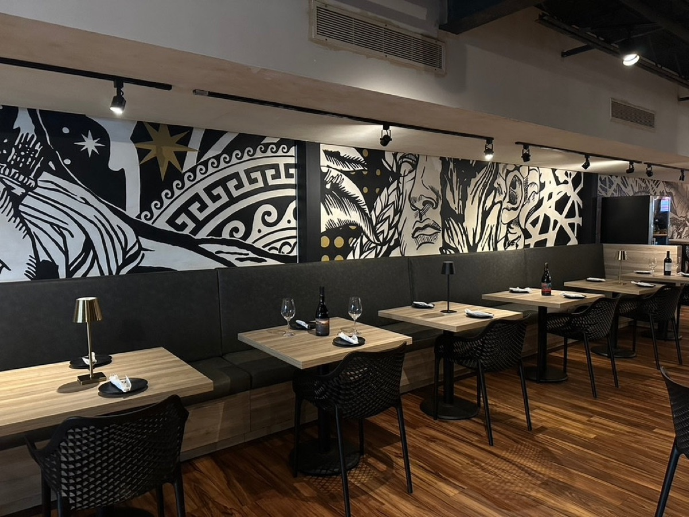

Cupey
Cupey Professional Mall
C. San Claudio
San Juan, PR 00926
Abierto todos los días · 6:00 – 19:00
Cómo llegar →
Cupey Professional Mall
C. San Claudio
San Juan, PR 00926
Abierto todos los días · 6:00 – 19:00
Cómo llegar →
Centro Comercial Apolo
Av. Lic. R. Rodríguez Apolo, Local #7
Guaynabo, PR 00969
Abierto todos los días · 6:00 – 19:00
Cómo llegar →
Centro Comercial Los Filtros, Local #9
Bayamón, PR 00956
Abierto todos los días · 6:00 – 19:00
Cómo llegar →Bueno saber
El pan sale a las 7:00; la repostería sigue durante la mañana. Lo popular se acaba — llega temprano.
Ordena online para recoger el mismo día en cualquier localidad, o delivery en el área metro de San Juan.
¿Celebras algo? Horneamos bandejas y platos de repostería por encargo — solo escríbenos.
¿No puedes venir?
Ordena online y lo tendremos listo, fresco de la hornada de la mañana.